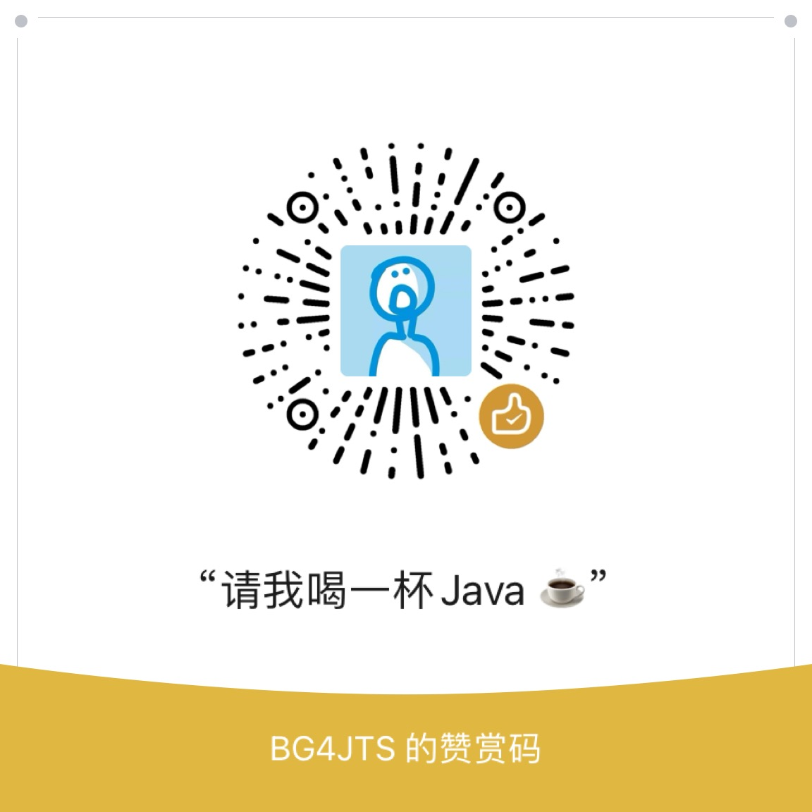

GitHub FastNya 节点设置
拖拽你的 Proxy.txt 到这里，或
点击选择
开始测速
节点
延迟
状态
设为默认
其他设置
自动切换不可用节点
开启Debug模式（F12控制台输出详细日志）
界面主题：
现代风格
毛玻璃风格
暗黑风格
极简风格
免责声明
本插件仅供学习与交流使用，所有资源均来自互联网，严禁用于任何商业用途。如有侵权请联系删除。
友情链接
GitHub加速喵项目主页
|
致谢
公益服务，请勿滥用。加速源来自网络收集整合，在此感谢每一位分享者。
温馨提示
如遇问题请先刷新页面或重启浏览器，更多帮助请访问项目主页。
赞助者名单
感谢每一位支持和赞助本项目的小伙伴！
贡献者名单
请我喝一杯 Java ☕

BG4JTS 的赞赏码
打赏的人都...
1. 愿你微笑今日，快乐永远！
2. 祝你福寿安康。龙马精神。
3. 祝你锦绣前程，喜气洋洋。
4. 祝你四时如意，万事遂心。
5. 爱人永相伴，笑容永不变！
6. 祝你笑口常开，快乐常在。
7. 愿你好运常在，天天开心！
8. 愿你快乐不断，健康相伴!
9. 境由爱造，还是爱逐境迁。
10. 祝你工作顺利，天天开心。
11. 心宽容天下，精彩铸心魂。
12. 祝你玉树琼枝，龙腾凤翔。
13. 祝你幸福如意，心想事成。
14. 愿你万事大吉，好上加好！
15. 祝你生日快乐，幸福安康。
16. 祝你事业有成，幸福快乐。
17. 祝你天生一对，地造一双。
18. 愿你万事大吉，好上加好！
19. 世界再大，我眼里仅有你。
20. 快乐常相伴，健康永相随。
21. 祝你燕侣双俦，闺房和乐。
22. 一花一世界，一叶一追寻。
23. 子君诞辰时，亲人明媚心！
24. 回望旧时光，幸福有几何？
25. 鱼知水恩，乃幸福之源也。
26. 祝你春节快乐，幸福来到！
27. 祝你繁荣兴旺，一帆风顺。
28. 愿你无忧无烦，好运连连！
29. 愿你生活幸福，事事如愿!
30. 朋友，天冷了要保重身体。
31. 愿得一人心，白首不相离。
32. 开心无烦恼，顺心又顺意。
33. 愿你快乐相伴，如意围绕。
34. 福共海天长，与天地同寿。
35. 朋友如伞，伴你一路晴空！
36. 祝你天高地阔，人寿年丰。
37. 祝你财运亨通，吉祥如意！
38. 祝你生死挈阔，与子成说。
39. 祝你年年今日，岁岁今朝。
40. 神家中去，梦想变成真。
41. 祝你一人一心，白首不离。
42. 祝你天翔紫燕，地暖春风。
43. 祝你心有灵犀，一点就通。
44. 祝你莺歌燕舞，招财进宝。
45. 祝你生日快乐，健康幸福！
46. 我执你之手，与你共白头。
47. 快乐常相伴，健康永相随。
48. 朋友，天冷了要保重身体。
49. 祝你钟鼓乐之，鸳鸯比翼。
50. 这一生，我为你画地为牢。
51. 你是水，维系着我的生命。
52. 愿君开心快乐，健康幸福！
53. 金钱不胜数，干活不辛苦。
54. 祝你生活美丽工作顺利！
55. 祝你万事如意，大吉大利。
56. 祝你生日快乐，幸福安康。
57. 祝你幸福美满，官运亨通。
58. 祝你幸福永远，笑容灿烂。
59. 祝你天天开心，顺心顺意！
60. 祝你万事如意，鹏程万里。
61. 春去春又来，花谢花又开。
62. 祝你五谷丰登，迎春接福。
63. 愿新年带给你无边的幸福。
64. 我住长江头，君住长江尾。
65. 祝你我的未来，与你同在。
66. 天天好运道，日日福星照。
67. 祝你蒸蒸日上，身体健康。
68. 周末又来临，坚持好心境。
69. 感恩不是付出，而是收获。
70. 祝你前程似锦，好梦成真。
71. 祝你出入平安，龙马精神。
72. 相濡以沫，彼此牵手一生。
73. 祝你如意吉祥，万事胜意。
74. 祝你年年今日，岁岁今朝。
75. 愿你眉眼如初，岁月如故。
76. 祝你有情成眷，诗咏好逑。
77. 祝你万里春风，春回柳叶。
78. 地生连理枝，水出并头莲。
79. 事业正当午，身体壮如虎。
80. 祝你万事如意，紫气临门。
81. 简单问候到，快乐好心境。
82. 祝你心想事成，一帆风顺。
83. 走该走的路，见想见的人。
84. 祝你财运亨通，吉祥如意!
85. 祝你财源广进，恭贺新禧。
86. 祝你寿比南山，福如东海。
87. 祝你青春永驻，永远快乐！
88. 祝你生意兴隆，财源广进。
89. 共同度春秋，谱写新章篇。
90. 愿你快乐每一天，幸福永久!
91. 祝你年年今日，岁岁今朝。
92. 祝你幸福永远，笑容灿烂。
93. 祝你新春快乐，岁岁安怡！
94. 祝你荣华富贵，金玉满堂。
95. 我爱你，想要和你在一齐。
96. 祝你学高为师，德高为范。
97. 天天好运道，日日福星照。
98. 地生连理枝，水出并头莲。
99. 祝你春风得意，阖家安康。
100. 新的一年，祝你幸福平安！